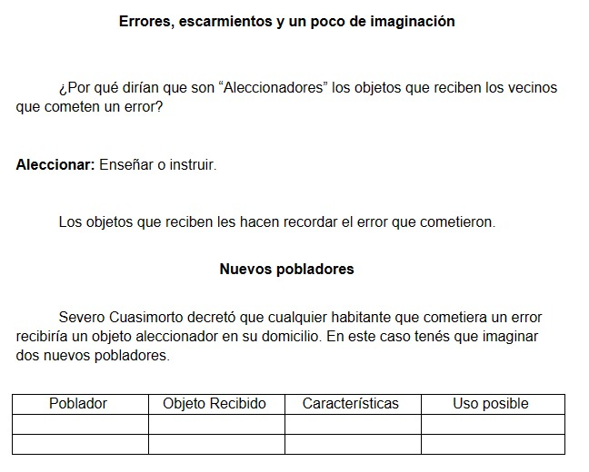
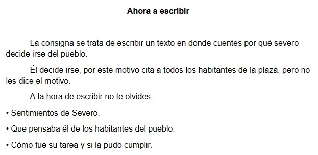
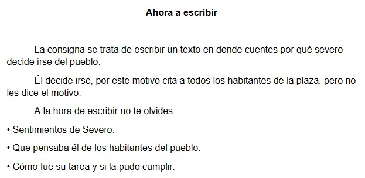

23 de abril
Descargar .docx (Archivo Word) Errores, escarmientos y un poco de imaginación
¿Por qué dirían que son “Aleccionadores” los objetos que reciben los vecinos que cometen un error?
Aleccionar: Enseñar o instruir.
Los objetos que reciben les hacen recordar el error que cometieron.
Nuevos pobladores
Severo Cuasimorto decretó que cualquier habitante que cometiera un error recibiría un objeto aleccionador en su domicilio. En este caso tenés que imaginar dos nuevos pobladores.
| Poblador | Objeto Recibido | Características | Uso Posible |
|---|---|---|---|
24 de abril
Descargar .docx (Archivo Word) 

Completar la ficha personal del protagonista
Para poder realizar la siguiente actividad deberás releer el cuento. En algunos casos, vas a tener que inventar los datos que faltan.
Nombre:
Cargo:
Edad:
Comida preferida:
Bebida preferida:
Mascota:
Características físicas:
Rasgos de personalidad:
Ahora a escribir
La consigna se trata de escribir un texto en donde cuentes por qué severo decide irse del pueblo.
Él decide irse, por este motivo cita a todos los habitantes de la plaza, pero no les dice el motivo.
A la hora de escribir no te olvides:
• Sentimientos de Severo.
• Que pensaba él de los habitantes del pueblo.
• Cómo fue su tarea y si la pudo cumplir.
26 de abril
Descargar .docx (Archivo Word)
El pozo: Juan Sebastián Rouchetti
• Leemos el texto.
• Intercambio oral.
La salida, los protagonistas y el lugar.
Los pibes - Como los llama algunas veces el narrador - Son tres. De algunos sabemos los nombres o sabemos sus apodos.
• Releemos las primeras páginas e identificamos a los personajes.
• Identificamos al narrador. Narrador protagonista, habla en primera persona.
EJEMPLOS:
“Caminamos los dos atrás del chueco...”, “Cury es de Racing, como yo”.
Fíjense que el narrador habla mucho del lugar.
1) ¿Que son los monoblocks? Nombra las calles por donde dicen que andan.
2) ¿Que entienden por ambiente ferroviario? ¿Qué es un tren de carga? ¿Que son las pipas? ¿Cómo se llaman los trenes que no son de carga?
3) Releemos esta parte: “Caminamos hasta el terraplén, subimos la barranca y empezamos a buscar a lo largo de la vía. No sabíamos cuánto tiempo teníamos antes de que pasara de nuevo el tren...” Los chicos habían escuchado pasar un tren, ¿Por qué será que se apuran?
4) ¿Que son los durmientes? ¿Que buscaban Cury, el chueco y el narrador “A lo largo de la vía”?
5) ¿Dónde estaba el pozo? Relean página 4.
6) Relean la página 7 ¿Cómo era el pozo?
- Busquen datos del autor.